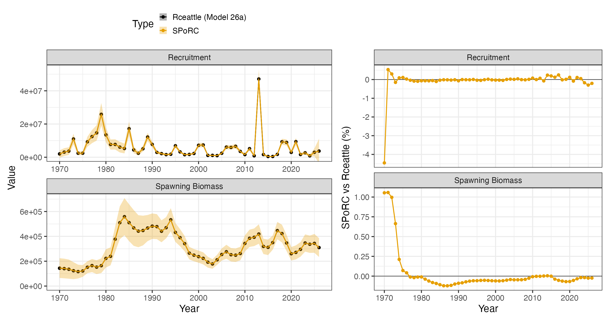
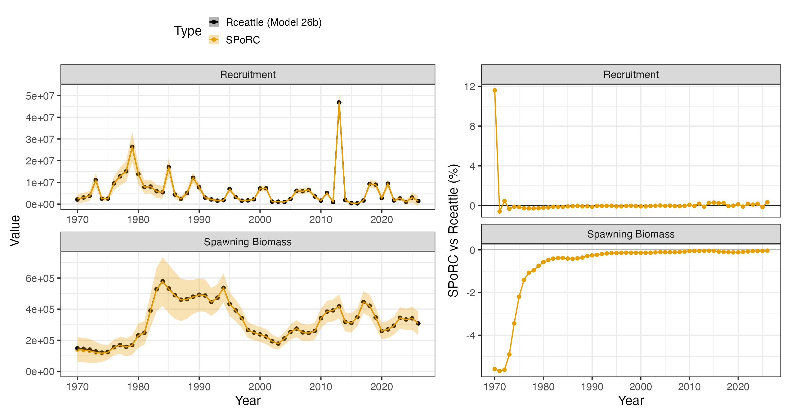
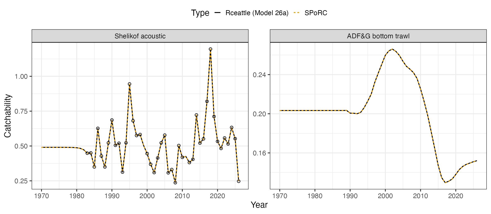
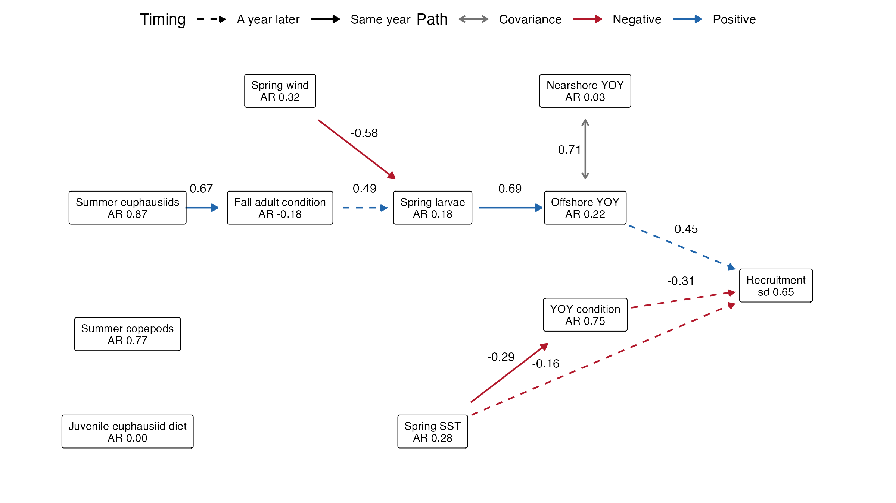
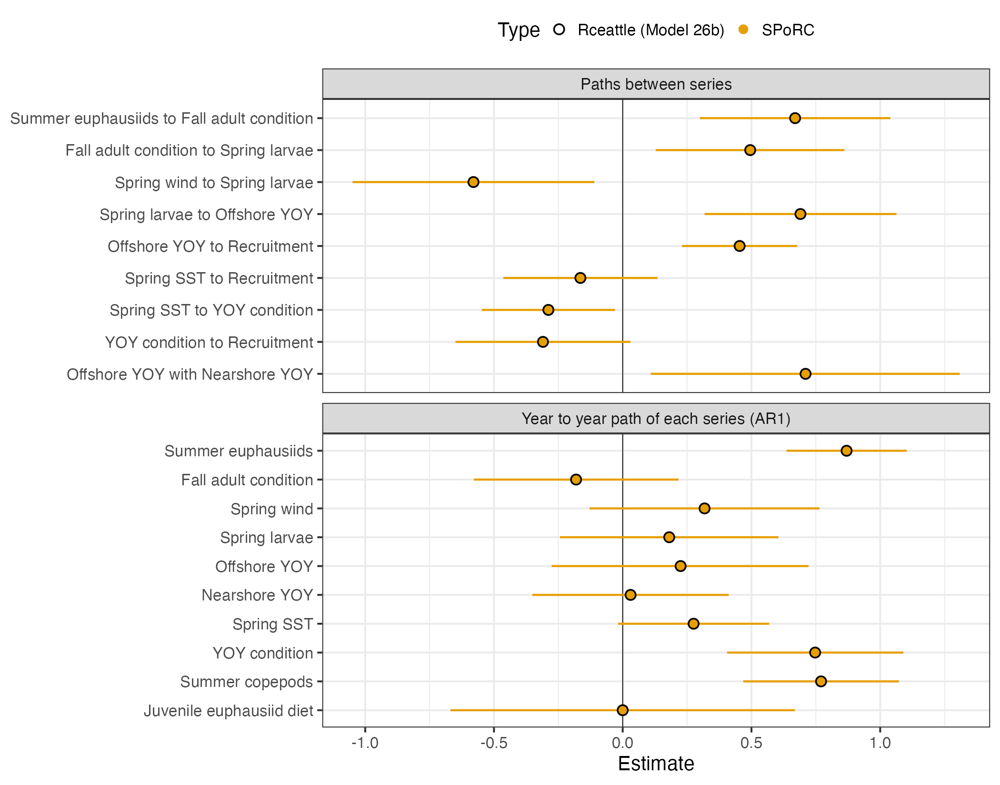

Gulf of Alaska Walleye Pollock (Rceattle bridge)
Source:vignettes/al_goa_pollock_case_study.Rmd
al_goa_pollock_case_study.RmdOverview
This case study bridges the two models proposed for the 2026 Gulf of
Alaska walleye pollock assessment (Monnahan et al. 2026) from
Rceattle into SPoRC. Rceattle
(Adams et al. 2022) is an age-structured assessment framework written in
TMB, and the assessment moved to it in 2026. Model 26a is a single sex
model from 1970 to 2026 at ages 1 to 10 with a plus group, fit to one
fishery and four surveys, in which the recruitment deviations are random
effects and their standard deviation is estimated. Model 26b is the same
model with recruitment linked to ten ecosystem series through a dynamic
structural equation model (dsem; Thorson et al. 2024), following
Champagnat et al. (2026).
Three features of these models shape the specification below. Fishery selectivity is a double logistic curve whose ascending limb changes from year to year. The catchability of two surveys also changes from year to year, and for the Shelikof Strait survey those changes are measured by a covariate rather than being left to the index alone. Finally, in model 26b the recruitment deviations take their distribution from the arrows of a dsem, in which several of the ecosystem series are observed in only a few years.
| Component | Years | Observations | Likelihood |
|---|---|---|---|
| Fishery catch | 1970 to 2026 | 57 | Lognormal, standard deviation 0.05 |
| Fishery age compositions | 1975 to 2025 | 51 years at ages 2 to 10 | Dirichlet-multinomial |
| Shelikof Strait acoustic survey (March) | 1992 to 2026 | 33 indices, 33 years of ages 3 to 10 | Lognormal, Dirichlet-multinomial |
| NMFS bottom trawl survey (July) | 1990 to 2025 | 17 indices, 17 years of ages 1 to 10 | Lognormal, Dirichlet-multinomial |
| ADF&G bottom trawl survey (July) | 1988 to 2026 | 39 indices, 13 years of ages 1 to 10 | Lognormal, Dirichlet-multinomial |
| Summer acoustic survey (June) | 2013 to 2023 | 6 indices, 6 years of ages 1 to 10 | Lognormal, Dirichlet-multinomial |
| Shelikof catchability covariate | 1983 to 2026 | 42 | Normal, standard deviation 0.02 |
| Ten ecosystem series (model 26b) | 1970 to 2026 | 7 to 42 years each | Considered known where observed |
We compare SPoRC with Rceattle fit to the
same input file under the settings of the assessment’s own script. In
the following, we first walk through the specification in the order of
the setup calls, then start the fit at the Rceattle
estimate, and finally compare the two fits. The code builds either
model: model_name is "26a" or
"26b", and the two places where the models differ, the
recruitment call and the arrows of the dsem, read it.
library(SPoRC)
model_name <- "26a" # "26b" links recruitment to the ecosystem series
d <- sgl_rg_goa_pollock_data$inputs
rce <- sgl_rg_goa_pollock_data[[paste0("m", model_name)]] # Rceattle's estimates for that model
years <- d$years
ages <- d$ages
n_yrs <- d$n_yrs
n_ages <- d$n_ages
n_srv <- d$n_srv_fleetsModel dimensions
The stock is a single population in a single region, with one sex and
one season. The four surveys are each their own fleet, and the catch is
one fleet. Rceattle was run without a lognormal correction
on the recruitment deviations, so that mean recruitment is the median of
recruitment, and it predicts the mean rather than the median of the
catch and of each index by subtracting half the observation variance
from the log prediction. The two bias correction switches set the same
choices here.
input_list <- Setup_Mod_Dim(
n_pop = 1,
years = years,
ages = ages,
lens = NA,
n_regions = 1,
n_sexes = 1,
n_seas = 1,
n_fish_fleets = 1,
n_srv_fleets = n_srv,
bias_correct_pe = "none",
bias_correct_oe = 1,
verbose = FALSE
)Recruitment
Recruitment at age 1 is a mean with annual deviations and no
stock-recruitment relationship. In model 26a the deviations are
independent with one standard deviation, which is estimated using
Laplace Approximation. In model 26b the deviations instead take their
distribution from the arrows of a dsem model, so
RecDevs_model is "dsem" and the standard
deviation of recruitment is the arrows’ own line for it, which leaves
nothing for sigmaR_spec to estimate. Spawning takes place
in the middle of March.
The 1970 age structure is the one place where we do not reproduce
Rceattle. Both models start ages 2 to 10 from the unfished
equilibrium at mean recruitment, and both then scale those ages by a
single factor. In Rceattle that factor is the 1970
recruitment deviation, so that one parameter sets both the size of the
1970 year class and the level of every older age in that year. To mimic
this, we specify that ages 2 to 10 share one deviation of their own,
which is estimated without a penalty. The fit therefore has one more
parameter than Rceattle’s.
rec_devs_model <- "iid"
sigmaR_spec <- "est_shared_all"
if(model_name == "26b") {
rec_devs_model <- "dsem" # the arrows give the deviations their distribution
sigmaR_spec <- "fix" # the standard deviation of recruitment is a line of the arrows
}
input_list <- Setup_Mod_Rec(
input_list,
rec_model = "mean_rec",
RecDevs_model = rec_devs_model,
sigmaR_spec = sigmaR_spec,
sigmaR_switch = 1,
do_rec_bias_ramp = 0,
init_age_strc = "scalar_no_move",
equil_init_age_strc = "stoch_shared_ages",
init_age_devs_shared = c(1, 1, 1, 1, 1, 1, 1, 1, 1), # all init ages share 1 dev
t_spawn = d$t_spawn
)Biological dynamics
Weight at age by year, maturity at age and natural mortality at age are fixed inputs. Natural mortality declines with age and does not change through time, and the fishery and each survey have their own weight at age.
Rceattle pools the youngest ages of two composition data
sets after ageing error has been applied: age 1 of the fishery
compositions is added to age 2, and ages 1 and 2 of the Shelikof
compositions are added to age 3. Because the pooling happens to the aged
fish rather than to the true ages, we give those two fleets an ageing
error matrix of their own, the assessment’s matrix with the pooled
columns added together, and supply the observed compositions pooled in
the same way. The other three surveys read the assessment’s matrix as it
is.
input_list <- Setup_Mod_Biologicals(
input_list,
WAA = d$WAA,
WAA_fish = d$WAA_fish,
WAA_srv = d$WAA_srv,
MatAA = d$MatAA,
AgeingError = d$AgeingError,
AgeingError_fish = d$AgeingError_fish,
AgeingError_srv = d$AgeingError_srv,
fit_lengths = 0,
M_spec = "fix",
Fixed_natmort = d$natmort
)Catch and fishing mortality
The catch is fit as a lognormal observation with a small, fixed
standard deviation. Rceattle estimates a log fishing
mortality for each year with no penalty, so we fix the mean of the
annual level at zero and leave the annual deviations free, which
together are the log fishing mortality of each year.
input_list <- Setup_Mod_Catch_and_F(
input_list,
ObsCatch = d$ObsCatch,
UseCatch = d$UseCatch,
Use_F_pen = 0,
ln_F_mean_spec = "fix",
sigmaC_spec = "fix",
ln_sigmaC = array(log(d$catch_sd), dim = c(1, n_yrs, 1, 1))
)Fishery compositions
The fishery age compositions follow a Dirichlet-multinomial
distribution with an estimated overdispersion parameter. Only ages 2 to
10 are fit, since age 1 was pooled into age 2, and
FishAgeComps_bins specifies those bins. There is no fishery
index and there are no length compositions fit to.
input_list <- Setup_Mod_FishIdx_and_Comps(
input_list,
ObsFishIdx = array(NA, dim = c(1, n_yrs, 1, 1)),
ObsFishIdx_SE = array(NA, dim = c(1, n_yrs, 1, 1)),
UseFishIdx = array(0, dim = c(1, n_yrs, 1, 1)),
ObsFishAgeComps = d$ObsFishAgeComps,
UseFishAgeComps = d$UseFishAgeComps,
ISS_FishAgeComps = d$ISS_FishAgeComps,
ObsFishLenComps = array(NA, dim = c(1, n_yrs, 1, 1, 1, 1)),
UseFishLenComps = array(0, dim = c(1, n_yrs, 1, 1)),
ISS_FishLenComps = array(0, dim = c(1, n_yrs, 1, 1, 1)),
fish_idx_type = "none",
FishAgeComps_LikeType = "Dirichlet-Multinomial",
FishLenComps_LikeType = "none",
FishAgeComps_Type = "agg_Year_1-terminal_Fleet_1",
FishLenComps_Type = "none_Year_1-terminal_Fleet_1",
FishAgeComps_bins = list(2:10)
)Survey indices and compositions
The four surveys are, in fleet order, the Shelikof Strait acoustic survey, the NMFS bottom trawl survey, the ADF&G bottom trawl survey and the summer acoustic survey. Each index is a biomass with a lognormal error whose standard deviation is supplied for each year, and each survey has Dirichlet-multinomial age compositions with an overdispersion parameter of its own. The Shelikof compositions are fit at ages 3 to 10, as described above, and the other three are fit at every age.
input_list <- Setup_Mod_SrvIdx_and_Comps(
input_list,
ObsSrvIdx = d$ObsSrvIdx,
ObsSrvIdx_SE = d$ObsSrvIdx_SE,
UseSrvIdx = d$UseSrvIdx,
ObsSrvAgeComps = d$ObsSrvAgeComps,
UseSrvAgeComps = d$UseSrvAgeComps,
ISS_SrvAgeComps = d$ISS_SrvAgeComps,
ObsSrvLenComps = array(NA, dim = c(1, n_yrs, 1, 1, 1, n_srv)),
UseSrvLenComps = array(0, dim = c(1, n_yrs, 1, n_srv)),
ISS_SrvLenComps = array(0, dim = c(1, n_yrs, 1, 1, n_srv)),
srv_idx_type = c("biom", "biom", "biom", "biom"),
SrvAgeComps_LikeType = c("Dirichlet-Multinomial", "Dirichlet-Multinomial", "Dirichlet-Multinomial", "Dirichlet-Multinomial"),
SrvLenComps_LikeType = c("none", "none", "none", "none"),
SrvAgeComps_Type = c("agg_Year_1-terminal_Fleet_1", "agg_Year_1-terminal_Fleet_2",
"agg_Year_1-terminal_Fleet_3", "agg_Year_1-terminal_Fleet_4"),
SrvLenComps_Type = c("none_Year_1-terminal_Fleet_1", "none_Year_1-terminal_Fleet_2",
"none_Year_1-terminal_Fleet_3", "none_Year_1-terminal_Fleet_4"),
SrvAgeComps_bins = list(3:10, NULL, NULL, NULL)
)Fishery selectivity
Fishery selectivity is double logistic, the product of an ascending
and a descending logistic curve, each with an age at 50% selection and a
slope. The descending limb is constant through time. The ascending limb
follows a random walk from 1971 onward with 1970 set as the base curve,
and fish_sel_devs_pars then names the two parameters of
that limb as the ones with annual deviations. The walk is written such
that the age at 50% selection changes by adding its deviation, so that
its step standard deviation is in years of age, while the slope changes
in proportion, with a step standard deviation on the log scale, and
fish_sel_devs_form sets each. Both standard deviations are
fixed, and the deviations are estimated as penalized fixed effects
rather than integrated out, as they are in Rceattle.
Each of the four parameters has a prior. The two ages at 50%
selection have normal priors on their own scale, centered on a young age
for the ascending limb and an old age for the descending limb, which is
the "par_normal" type defined in the prior. The two slopes
have lognormal priors, and the centers and standard deviations of all
four are in the data frame below.
fish_selex_prior <- data.frame(
region = 1,
fleet = 1,
block = 1,
sex = 1,
par = c(1, 2, 3, 4), # ascending age at 50%, ascending slope, descending age at 50%, descending slope
mu = c(0, exp(-1), 10, exp(-1)),
sd = c(3, 1.5, 3, 1.5),
type = c("par_normal", "par", "par_normal", "par")
)
input_list <- Setup_Mod_Fishsel_and_Q(
input_list,
fish_sel_model = "dbllogist1_Fleet_1",
fish_sel_blocks = "none_Fleet_1",
fish_q_blocks = "none_Fleet_1",
fish_fixed_sel_pars_spec = "est_all",
fish_q_spec = "fix",
cont_tv_fish_sel = "rw_Fleet_1",
fish_sel_devs_pars = list(1:2),
fish_sel_devs_form = list(c("additive", "multiplicative", "multiplicative", "multiplicative")),
fish_sel_devs_spec = "est_all",
fishsel_pe_pars_spec = "fix",
fishsel_dont_est_dev_first = 1,
Use_fish_selex_prior = 1,
fish_selex_prior = fish_selex_prior
)Survey selectivity and catchability
The two acoustic surveys select young fish fully and older fish
progressively less, so their selectivity is a descending logistic curve,
and the two bottom trawl surveys have an ascending logistic curve. The
Shelikof index does not include fish of ages 1 and 2, which
srv_sel_zero_bins sets to zero. Each curve has the same
priors as the matching limb of the fishery curve.
The two models scale selectivity differently, which matters for
catchability. Rceattle divides each curve by its value at a
reference age. By contrast, SPoRC leaves a logistic curve
as it is, so its catchability is Rceattle’s divided by the
curve’s value at the reference age, and the same is true of fishing
mortality and the fishery curve at age 7. The predicted indices and
catches are identical either way. The one place where the scaling enters
the specification is the prior on the NMFS bottom trawl catchability, an
informative lognormal, which Rceattle applies to
catchability at age 10. We therefore divide the prior’s center by the
value of the curve at age 10 at Rceattle’s estimate, which
is exact at that estimate and a close approximation near it, because the
curve is nearly one at age 10.
The catchability of the Shelikof and ADF&G surveys changes from
year to year. Both are declared as "dsem", so that the
arrows in the next section set the annual deviations, and the module’s
own standard deviation and correlation are fixed because nothing reads
them. The ADF&G deviations are estimated from 1971 onward, with 1970
at zero, so that the catchability parameter is the 1970 level.
# figure out survey's curve at Rceattle's reference age
srv_limb <- c(1, -1, -1, 1) # 1 for a descending curve, -1 for an ascending one
srv_ref_value <- 1 / (1 + exp(srv_limb * exp(rce$srv_sel_pars[, "log_slope"]) * (d$srv_sel_ref_age - rce$srv_sel_pars[, "age50"])))
srv_q_prior <- data.frame(
region = 1,
block = 1,
fleet = 2,
mu = d$srv_q_prior_mean / srv_ref_value[2],
sd = d$srv_q_prior_sd
)
srv_selex_prior <- data.frame(
region = 1,
block = 1,
sex = 1,
fleet = c(1, 1, 2, 2, 3, 3, 4, 4),
par = c(1, 2, 1, 2, 1, 2, 1, 2), # age at 50% then slope
mu = c(10, exp(-1), 0, exp(-1), 0, exp(-1), 10, exp(-1)),
sd = c(3, 1.5, 3, 1.5, 3, 1.5, 3, 1.5),
type = c("par_normal", "par", "par_normal", "par", "par_normal", "par", "par_normal", "par")
)
input_list <- Setup_Mod_Srvsel_and_Q(
input_list,
srv_sel_model = c("desclogist1_Fleet_1", "logist1_Fleet_2", "logist1_Fleet_3", "desclogist1_Fleet_4"),
srv_sel_blocks = c("none_Fleet_1", "none_Fleet_2", "none_Fleet_3", "none_Fleet_4"),
srv_q_blocks = c("none_Fleet_1", "none_Fleet_2", "none_Fleet_3", "none_Fleet_4"),
srv_fixed_sel_pars_spec = c("est_all", "est_all", "est_all", "est_all"),
srv_q_spec = c("est_all", "est_all", "est_all", "est_all"),
cont_tv_srv_sel = c("none_Fleet_1", "none_Fleet_2", "none_Fleet_3", "none_Fleet_4"),
srv_sel_zero_bins = list(1:2, NULL, NULL, NULL),
srv_q_model = c("dsem", "none", "dsem", "none"),
sigma_srv_q_spec = "fix",
srv_q_rho_spec = "fix",
srv_q_re_years = list(NULL, NULL, 2:n_yrs, NULL),
Use_srv_q_prior = 1,
srv_q_prior = srv_q_prior,
Use_srv_selex_prior = 1,
srv_selex_prior = srv_selex_prior,
t_srv = d$t_srv
)Catchability and recruitment through a dsem
The catchability of the Shelikof survey changes from year to year
with a covariate, Qcov. Rceattle has a term of
its own for this, outside its dsem. SPoRC has no separate
term for covariates, since Setup_Mod_DSEM is how a
covariate reaches a process, so we write the same model as four arrow
lines. The first two lines say that the series Qcov
measures follows an AR1 process, and the third that the Shelikof
deviation in log catchability is beta_q times that series,
so that a positive beta_q means catchability is higher in a
year when Qcov is above its mean. The fourth line gives the
deviation a standard deviation of zero, which leaves it with no noise of
its own, so that it is exactly that multiple. Qcov takes
the family "gaussian_fixed_sd", which reads each observed
value as a measurement of the series with a small, known error, supplied
in dsem_fixed_sd.
The ADF&G deviations are a random walk with a fixed step standard deviation, which is the last two lines: a path of one from the series to itself a year later, and its standard deviation.
dsem_arrows <- c(
"Qcov -> Qcov, 1, rho_q", # the series Qcov measures, correlated from year to year
"Qcov <-> Qcov, 0, sd_q", # and its innovation sd
"Qcov -> srv_q_Region_1_Fleet_1, 0, beta_q", # Shelikof log q deviation is beta_q times that series
"srv_q_Region_1_Fleet_1 <-> srv_q_Region_1_Fleet_1, 0, NA, 0", # exactly, with no noise of its own
"srv_q_Region_1_Fleet_3 -> srv_q_Region_1_Fleet_3, 1, NA, 1", # ADF&G log q deviation, a random walk
"srv_q_Region_1_Fleet_3 <-> srv_q_Region_1_Fleet_3, 0, NA, 0.05" # with a step sd fixed at 0.05
)
dsem_data <- data.frame(year = years, Qcov = d$Qcov)
dsem_family <- c(Qcov = "gaussian_fixed_sd") # Qcov measures its series with a known error
dsem_fixed_sd <- data.frame(year = years, Qcov = 0.02) # the sd of that error
dsem_mu_spec <- "zero" # mean stays at zeroModel 26b adds the ten ecosystem series and recruitment. Each series
has a path to itself a year later, so that a year without an observation
is informed by the years around it, and the remaining lines are the
causal paths of the assessment: spring sea surface temperature, the
summer abundance of young of the year offshore and their condition each
have a path to recruitment a year later, and the other series either act
on recruitment through those three or are not linked to it. The line
rec <-> rec is the standard deviation of what the
paths leave unexplained, which takes the place of the recruitment
standard deviation of model 26a. A series is taken as known in the years
it was observed and is a random effect in the years it was not, and the
mean of each series is estimated, as it is in Rceattle.
if(model_name == "26b") {
dsem_arrows <- c(
dsem_arrows,
"Spr_SST -> Spr_SST, 1, AR_SST",
"Wind_NS -> Wind_NS, 1, AR_Wind",
"Sum_LCopepod_Shelikof -> Sum_LCopepod_Shelikof, 1, AR_Cope",
"Sum_Euph_Kodiak -> Sum_Euph_Kodiak, 1, AR_Euph",
"Spr_Larvae_Shelikof -> Spr_Larvae_Shelikof, 1, AR_larvae",
"Sum_OffYOY_Cond_Shelikof -> Sum_OffYOY_Cond_Shelikof, 1, AR_CondOffYOY",
"Sum_OffYOY_Shelikof -> Sum_OffYOY_Shelikof, 1, AR_OffYOY",
"Sum_NearYOY_Kodiak -> Sum_NearYOY_Kodiak, 1, AR_NearYOY",
"Sum_Juv_EuphDiet -> Sum_Juv_EuphDiet, 1, AR_JuvEuphDiet",
"Fal_Adult_Cond_Fishery -> Fal_Adult_Cond_Fishery, 1, AR_CondAd",
"rec <-> rec, 0, sigmaR, 1",
"Sum_Euph_Kodiak -> Fal_Adult_Cond_Fishery, 0, Euph_to_CondAd",
"Fal_Adult_Cond_Fishery -> Spr_Larvae_Shelikof, 1, CondAd_to_Larvae",
"Wind_NS -> Spr_Larvae_Shelikof, 0, Wind_to_Larvae",
"Spr_Larvae_Shelikof -> Sum_OffYOY_Shelikof, 0, Larvae_to_OffYOY",
"Sum_OffYOY_Shelikof <-> Sum_NearYOY_Kodiak, 0, OffYOY_to_NearYOY",
"Sum_OffYOY_Shelikof -> rec, 1, offYOY_to_R",
"Spr_SST -> rec, 1, SST_to_R",
"Spr_SST -> Sum_OffYOY_Cond_Shelikof, 0, SST_to_CondYOY",
"Sum_OffYOY_Cond_Shelikof -> rec, 1, CondYOY_to_R"
)
dsem_data <- cbind(dsem_data, d$covariates[, -1])
dsem_family[names(d$covariates)[-1]] <- "fixed" # the ten series are known in the years they were observed
dsem_mu_spec <- names(d$covariates)[-1] # the ten series whose means are estimated
} # end if 26b
input_list <- Setup_Mod_DSEM(
input_list,
dsem_arrows = dsem_arrows,
dsem_data = dsem_data,
dsem_family = dsem_family,
dsem_fixed_sd = dsem_fixed_sd,
dsem_mu_spec = dsem_mu_spec
)Weighting
Every likelihood component enters with a weight of one.
Rceattle adds a small constant to the observed and the
expected compositions alike, and nothing to the indices, so we set the
same constants. The weight on the initial age deviation is zero, which
leaves the one deviation shared by ages 2 to 10 in 1970 without a
penalty.
input_list <- Setup_Mod_Weighting(
input_list,
Wt_Catch = 1,
Wt_FishIdx = 1,
Wt_SrvIdx = 1,
Wt_Rec = 1,
Wt_Init_Rec = 0,
Wt_F = 1,
Wt_Tagging = 0,
addtocomp = d$comp_offset,
comp_const_obs = 1,
addtosrvidx = 0,
addtofishidx = 0
)Differences from Rceattle
The specification above follows Rceattle’s model, but
several parts of it are written differently with some minor differences.
The following parts are not the same model.
| Part of the model | In Rceattle
|
Here | |
|---|---|---|---|
| 1970 age structure | Ages 2 to 10 are scaled by the 1970 recruitment deviation | Ages 2 to 10 share a deviation of their own, without a penalty, which is one more parameter | |
| Priors on the Dirichlet-multinomial parameters | A normal prior with a mean of 0 and a standard deviation of 2 on the log of each fleet’s parameter | No prior | |
| Prior on the NMFS bottom trawl catchability | On catchability at age 10, so that its center moves with the selectivity curve | The center is divided by the curve’s value at age 10 at
Rceattle’s estimate, 0.989, and stays there |
|
| First year of the Shelikof catchability series | The stationary variance of the AR1 process | The innovation variance, which is smaller by about a factor of , about 0.84 |
Starting at the Rceattle estimate
We start the fit at Rceattle’s estimate, which shortens
the fit but does not change where it ends. Most values move across
directly, with the shared 1970 deviation started at the 1970 recruitment
deviation, which is the value Rceattle gives it. The
selectivity deviations go in on the scales described above, and the two
fixed step standard deviations are set here.
input_list$par$ln_global_R0 <- rce$ln_R0
input_list$par$ln_sigmaR[] <- log(rce$sigmaR)
input_list$par$ln_RecDevs[1, 1, ] <- rce$rec_dev
input_list$par$ln_InitDevs[1, 1, , 1] <- rce$rec_dev[1]
# fishery curve, and the annual deviations of its ascending limb
fish_sel <- rce$fish_sel_pars
fish_walk <- rce$fish_sel_walk
input_list$par$fish_fixed_sel_pars[1, , 1, 1, 1] <- c(log(fish_sel["asc_age50"]), fish_sel["asc_log_slope"],
log(fish_sel["desc_age50"]), fish_sel["desc_log_slope"])
input_list$par$ln_fishsel_devs[1, , 1, 1, 1] <- fish_walk[, "age50"] # added to the age at 50%
input_list$par$ln_fishsel_devs[1, , 2, 1, 1] <- fish_walk[, "log_slope"] # added to the log slope
input_list$par$fishsel_pe_pars[1, 1, 1, 1] <- log(0.2) # step sd of the age at 50%, in years of age
input_list$par$fishsel_pe_pars[1, 2, 1, 1] <- log(0.05) # step sd of the log slope
ref_age <- d$fish_sel_ref_age
asc_ref <- 1 / (1 + exp(-exp(fish_sel["asc_log_slope"] + fish_walk[, "log_slope"]) * (ref_age - fish_sel["asc_age50"] - fish_walk[, "age50"])))
desc_ref <- 1 / (1 + exp(exp(fish_sel["desc_log_slope"]) * (ref_age - fish_sel["desc_age50"])))
input_list$par$ln_F_mean[] <- 0
input_list$par$ln_F_devs[1, , 1, 1] <- rce$log_F - log(asc_ref * desc_ref)
input_list$par$srv_fixed_sel_pars[1, 1, 1, 1, ] <- log(rce$srv_sel_pars[, "age50"])
input_list$par$srv_fixed_sel_pars[1, 2, 1, 1, ] <- rce$srv_sel_pars[, "log_slope"]
input_list$par$ln_srv_q[1, 1, ] <- rce$log_q - log(srv_ref_value)
input_list$par$ln_srv_q_devs[1, , ] <- rce$q_dev
input_list$par$ln_FishAge_theta_agg[] <- rce$log_theta_fish
input_list$par$ln_SrvAge_theta_agg[] <- rce$log_theta_srvThe arrows are started by name. Rceattle reports the
marginal standard deviation and correlation of the series
Qcov measures and the effect of that series on log
catchability, so the innovation standard deviation of the series is the
marginal standard deviation times
,
where
is the correlation, and the series itself starts at
Rceattle’s. Rceattle also allows the standard
deviation of a dsem line to be negative, since only its square enters
the model, so we take absolute values before the logarithm.
dsem_start <- c(rho_q = rce$q_rho,
sd_q = rce$q_sigma * sqrt(1 - rce$q_rho^2),
beta_q = rce$q_beta)
if(model_name == "26b") dsem_start <- c(dsem_start, rce$dsem_beta)
dsem_model <- input_list$data$dsem_model
input_list$par$dsem_beta[] <- dsem_start[dsem_model$beta_names]
input_list$par$ln_dsem_sd[] <- log(abs(dsem_start[dsem_model$ln_sd_names]))
input_list$par$dsem_x[, match("Qcov", dsem_model$variables)] <- rce$qcov_latent # the series Qcov measures
if(model_name == "26b") {
cov_names <- names(d$covariates)[-1]
input_list$par$dsem_mu[match(cov_names, dsem_model$variables)] <- rce$dsem_mu[cov_names]
}Fitting and comparison
The recruitment deviations, the ADF&G catchability deviations and
the cells of the dsem (the series Qcov measures, and the
other covariate series in the years they were not observed) are
integrated out.
re_names <- c("ln_RecDevs", "ln_srv_q_devs", "dsem_x")
fit <- fit_model(input_list$data, input_list$par, input_list$map, random = re_names,
do_optim = TRUE, newton_loops = 3, silent = TRUE)
sd_rep <- RTMB::sdreport(fit)Each fit has one fixed effect more than Rceattle’s,
which is the shared 1970 deviation, and both end with a negligible
gradient and a positive definite Hessian. The table gives the size of
each fit and the largest differences from Rceattle.
| Quantity | Model 26a | Model 26b |
|---|---|---|
Fixed effects, SPoRC and Rceattle
|
196 and 195 | 235 and 234 |
| Random effects | 170 | 528 |
Recruitment standard deviation, SPoRC and
Rceattle
|
1.006 and 1.004 | 0.651 and 0.651 |
| Spawning biomass, largest difference in any year | 1.06% (1971) | 5.68% (1971) |
| Spawning biomass, largest difference from 1980 | 0.12% | 0.57% |
| Spawning biomass, largest difference from 1997 | 0.07% | 0.14% |
| Recruitment, largest difference in any year | 4.45% (1970) | 11.60% (1970) |
| Recruitment, largest difference from 1980 | 0.30% | 0.34% |


Nearly all of the difference is in the 1970s and comes from the 1970
age structure. In model 26a the shared deviation of ages 2 to 10 and the
1970 recruitment deviation are estimated close to each other, and close
to the single value that Rceattle gives the two, so that
spawning biomass differs only slightly and only in the first few years.
In model 26b the two are further apart, with the older ages lower and
the 1970 year class higher than Rceattle’s single value, so
that the difference in spawning biomass is larger at the start and then
declines as those cohorts leave the population. As a check, we refit
both models in a development copy of SPoRC with the 1970
ages tied to the 1970 recruitment deviation, which brought spawning
biomass and recruitment to within a fraction of a percent of
Rceattle in every year. The differences that remain after
the 1970s are of that size, and likely reflect the other three
differences listed earlier: the priors on the Dirichlet-multinomial
parameters that we leave out, the center of the bottom trawl
catchability prior, and the variance of the first year of the Shelikof
catchability series.
The catchability series agree as closely: the correlation of the Shelikof deviations and the effect of the covariate are the same in both models to three decimals. In the figure below, catchability is shown at each survey’s reference age, so that the two models are on the same scale, and the points are the catchability implied by the covariate alone in the years it was observed.

For model 26b, every path coefficient and standard deviation of the
dsem is nearly identical to Rceattle’s estimate.
Recruitment increases with the offshore abundance of young of the year,
and decreases with spring sea surface temperature and with the condition
of young of the year, each a year later. The first figure below draws
the paths as a graph, and the second gives each estimate with its 95%
interval beside Rceattle’s. The intervals are wide, since
most of the series are observed in few years, and of the three paths
into recruitment only the one from offshore young of the year is clearly
away from zero.


References
Adams, G. D., Holsman, K. K., Barbeaux, S. J., Dorn, M. W., Ianelli, J. N., Spies, I., Stewart, I. J., Punt, A. E. 2022. An ensemble approach to understand predation mortality for groundfish in the Gulf of Alaska. Fisheries Research 251: 106303.
Champagnat, J., Monnahan, C. C., Sullivan, J. Y., Thorson, J. T., Shotwell, S. K., Rogers, L., Punt, A. E. 2026. Causal models as a scientific framework for next-generation ecosystem and climate-linked stock assessments. Fish and Fisheries 27: 942-959.
Monnahan, C., Adams, G., Lauffenberger, N. 2026. Gulf of Alaska pollock model updates. Alaska Fisheries Science Center, September 2026.
Thorson, J. T., Andrews, A. G., Essington, T. E., Large, S. I. 2024. Dynamic structural equation models synthesize ecosystem dynamics constrained by ecological mechanisms. Methods in Ecology and Evolution 15: 744-755.